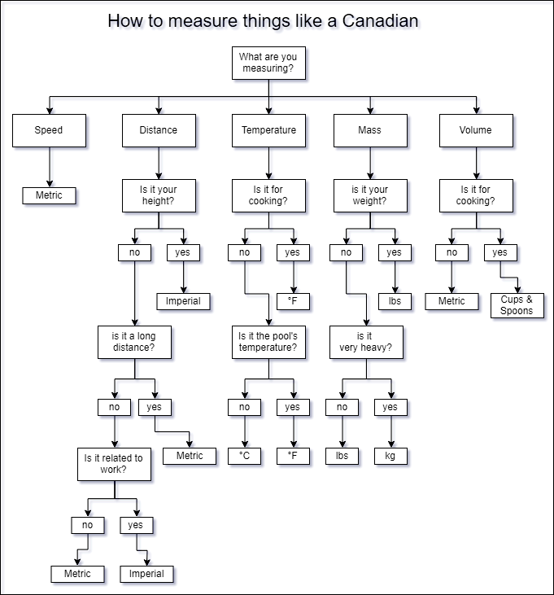

🇨🇦 Living in Montreal¶
🏠 Accommodation ¶
Housing info from Polytechnique: English version | Version française.
Kijjji.ca: buy and sell anything in Montreal; many apartments to rent, share, and sublet
Craigslist: numerous listings
Les pac: many different categories of classifieds
Louer.ca: for the entire province of Quebec
Rentals.ca: Apartments, houses, and condos for rent across Canada
🩺 Medical needs¶
If you are not sure you need to go to the hospital, call Info-Santé: 811**. **They will orient you.
Emergency¶
List of emergency hospitals (see here how busy each hospital is)
Centre hospitalier de St. MaryHôpital de Lachine (CUSM)
Hôpital de LaSalle (CSSS de Dorval-Lachine-LaSalle)
Hôpital de Verdun (CSSS du Sud-Ouest-Verdun)
Hôpital du Sacré-Coeur de Montréal
Hôpital Fleury (CSSS d’Ahuntsic et Montréal-Nord)
Hôpital général de Montréal (CUSM)
Hôpital général du Lakeshore (CSSS de l’Ouest-de-l’Île)
Hôpital général juif Sir Mortimer B. Davis
Hôpital Jean-Talon (CSSS du Coeur-de-l’Île)
Hôpital Maisonneuve-Rosemont
Hôpital Notre-Dame (CHUM)
Hôpital Royal Victoria (CUSM)
Hôpital Saint-Luc (CHUM)
Hôpital Santa Cabrini
Hôtel-Dieu (CHUM)
Institut de cardiologie de Montréal
Walk-in¶
Public Walk-in public (incl. week-end)¶
The Montreal Center for Health & Care
5655 Av du Parc suite 206, Montréal, QC H2V 4H2(514) 357-2167
Médico-centre Mont-Royal (longue attente!)
GMF-R PLATEAU MONT-ROYAL (longue attente!)
Private walk-in (incl. week-end)¶
Call before to make an appointment**.**
https://www.cliniqueenroute.com/en/homepage/our-clinics/griffintown/
Excelle MD
https://excellemd.com/clinique-privee-excellemd-de-montreal-lacadie/
855-735-5883
124$ consultation general, ouvert dimanche
RocklandMD
80\( pour ouvrir dossier, et 175\) pour consultation
Find a Family Doctor¶
You can register to the list to get a family doctor (GP). Please check the eligibility criteria before.
Daily life¶
